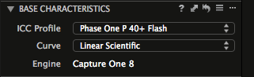

ICC Profiling for DIU Camera Systems Using the X-Rite Digital ColorChecker SG Card and basICColor input Software — ICC Profile Verification using IQ-Analyzer Software
Created:7/23/2015
Last updated: 07/25/2018
Within our Capture One software, under the BASE CHARACTERISTICS tool, there is a drop-down menu that allows us to choose an ICC Profile.

The chosen profile, in this case Flash, is specific to the Phase One back model being used.
An ICC profile is responsible for interpreting the raw capture data streaming off a digital back’s sensor. It shapes a capture’s tonal and color range, and the manner by which all captured tones and colors relate to one another. We can say that the ICC profiles pre-stocked within Capture One are “canned” because they are for optimized for specific digital back models (P40+, P45, P65, IQ180, IQ3); however, these profiles are not optimized for the specific digital back units we are working with. Since these canned profiles perform, at best, a generalized interpretation of sensor data, our real-world results are compromised. Colors can shift away from accurate, tones can lose their neutrality, contrast can be elevated, and even focus can appear softened.
By replacing the canned ICC profiles with in-house, custom-made ICC profiles, we are able to generate profiles that relate to the specific digital back, lens and lighting combinations present in each bay. In other words, instead of using a canned profile for an IQ180, we are able to create a profile for the specific IQ180 back residing in Bay 4 (serial number FP030582), its Schneider lens, and its four Profoto strobe light source.
Our own custom-made profile will be found within the same drop-down menu:

By using a standardized system from bay to bay to generate custom profiles, we not only optimize results from each station, but optimize the results from the studio as a whole. The desire is to have capture systems in place that interpret sensor data similarly. A project begun in Bay 1, theoretically, can then be finished in Bay 6. The results should closely match.
By the way, ICC means International Color Consortium.
Step One: Creating the ICC Profile Target Image
To begin, we need to image the X-Rite Digital ColorChecker SG Card.
To have standardized results from bay to bay we need a repeatable set-up**:
| Digital Back | - 30 inches above copy stand surface |
| Lights | - at 20 degrees |
| - 56" from center (copy stand surface to light) | |
| - 36" above copy stand surface |
* This set-up is applicable for Bays 1, 3, 5, and 6. The IQ3 in Bay 4 will use four lights at their standard height and distance. The BC100 has its own methodology.
**Please note , that since first creating this document back in 2015 some things have changed. One change is our conclusion that a repeatable set-up, as described above, is unnecessary among applicable bays. Best is to capture the SG Card using a set-up common to the bay in question, in other words, an average set-up for an average project. The lights shouldn’t be too high or too low, too angled, or too close to the table.
Start Capture One and set the PROCESS RECIPES to U Files. Make sure the ICC Profile for the PROCESS RECIPE is set for Embed color profile.
Go to BASE CHARACTERISTICS > ICC Profile > Effects > No color correction
Focus on chart and create an LCC.
Photograph the chart so that the central white square comes to 241 (E5) and neutralize on the middle grey (H5). If Capture One adjustments are needed to attain the 241 white-point, use the LEVELS highlight slider.
Crop the chart a hair more than size.
Add -TARGET as a suffix to the name of the file.
Process out the file.
Quit Capture One.
Step Two: Creating a Custom Profile Using basICColor input Software
Before opening the basICColor input software, which will create our custom profiles, you’ll need to plug in the USB dongle for the software. It’s red!
Start the software. Enlarge the window to fill screen.
The screen will appear, in part, as such:
Under Image click Select and navigate to your TARGET image and choose.
Under Reference click Select and navigate to file DCSG BC.txt and choose.

|
Your TARGET image will appear with a superimposed grid.
Hold down the shift key as you grab the upper left corner square and move the the upper left box of the grid over the upper left white square of the ColorChecker chart. The bounding box will turn green when properly positioned. While still holding down the shift key, grab the lower right corner and do the same. All peripheral boxes should turn green. One might need to adjust the corners independently, without the shift-key activated, to secure the proper outcome. All green is preferred, but a yellow bounding box here and there can be sufficient. None of the bounding boxes can appear red.
If a first attempt is unsuccessful, restart the program and try anew.
Here’s a good result:
Then under Filename name your profile. Our convention is as follows at this point in time:
PhaseOneBackModel-NYPL_Bay#_Flash_YYYYMM
e.g., PhaseOneP45-NYPL_Bay1_Flash_201807.
Our backs as of today (7/2018):
PhaseOneIQ3100MP-
PhaseOneIQ180-
PhaseOneP65-
PhaseOneP45-
PhaseOneP40+-
It’s very important to follow this convention as such, especially the PhaseOneBackModel- part, in order for proper viewing/accessibility within the Capture One application.
Under Spectral conversion choose > Illuminant > CIE Standard Illuminants > CIE_D50.

Click Create ICC profile(s) at the bottom of the window. The profile will be automatically stored within the computer’s Library folder > ColorSync > Profiles and made accessible to the Capture One program through the dropdown ICC menu within the Base Characteristics tool.
Step Three: Creating the ICC Profile Verification Image
Start Capture One and set the PROCESS RECIPES to U Files. Make sure the ICC Profile for the PROCESS RECIPE is set for ProPhoto.
Go to BASE CHARACTERISTICS > ICC Profile. In the dropdown menu you’ll find the ICC profile just created. Choose this profile and capture another image of the ColorChecker chart using the previously made LCC.
Adjust the white square (E5) to 241 and assure the neutrality of the middle grey (H5).
No need to crop.
Add -VERIFY as a suffix to the name of the file.
Process out the file.
Step Four: Verifying the Custom Profile Using IQ-Analyzer Software
Before opening the IQ-Analyzer software, which will verify our custom profiles, you’ll need to plug in the USB dongle for the software. It’s blue!
Once the program is loaded, choose Color from the dropdown menu in the upper left corner.
You’ll then load the -VERIFY image by clicking on the + icon found on the left-middle edge of the window.
Push Start to begin the analysis.
Your results might look something like this:
By clicking on the small right-pointing arrow in the upper-right corner, two sets of info palettes will appear. The first line of the second palette shows the Delta E measurements that are most relevant to the work at hand. In the example below we see a Delta E of .9 for the neutral category and 2.2 for the color category, resulting in a total Delta E of 1.7.
This is a very fine result.
By exploring the following dropdown, we can visualize the results in a variety of manners.
For instance:
And:
Click on the rotate and zoom buttons and use the cursor to move the 3D model about.
And finally these last two, both of which can be rotated and zoomed as well:

At this time it’s a good idea to export a report for future reference. This will come handy when running a verification using this same profile at some later date, say six months down the road. One can then ascertain whether the profile in question has remained stable over time. To create this report, click on the Export button in the lower-right corner of the window. Please note that this report, along with others that are automatically generated, are stored in the folder containing the original VERIFY tif.

Once you verify that the new profile is a keeper, you can transfer it from its current Color Sync location to a subfolder located within the Capture One application itself. This will help create a more stable operating environment for the profile to function within.
The following directory tree will lead you to your profile’s new home:

Lastly, it can be helpful to the group to share all operative profiles among all workstations. This will allow for the seamless processing at any workstation of session folders and EIP files, regardless of the bay in which they originated. Be sure, likewise, to store a copy of each new profile on the server to help facilitate this share and to back up the work done.